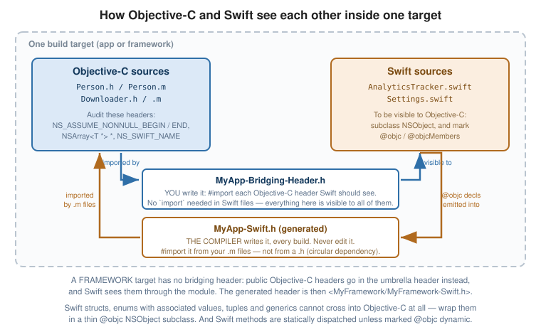

Swift Interoperability
|
This content was generated with the assistance of AI and should be verified against the official documentation before being relied on in production. |
Objective-C and Swift interoperate closely: within a single target, each language can use the other’s types directly, with the compiler generating the necessary interfaces. Most Objective-C written today is written in a project that also contains Swift, so the annotations that shape this import are a routine part of writing good Objective-C headers.
The Two Directions

The mechanism is asymmetric, and knowing which file does which job is most of the battle:
| Direction | File | Who writes it |
|---|---|---|
Objective-C → Swift |
|
You. Import the Objective-C headers you want Swift to see. |
Swift → Objective-C |
|
The compiler, on every build. You only |
Objective-C → Swift: the Bridging Header
// MyApp-Bridging-Header.h
#import "Person.h"
#import "Downloader.h"
#import "NSString+MyValidation.h"Everything imported here is visible to all Swift files in the target — no import statement needed on the
Swift side:
// AnyFile.swift
let person = Person(name: "Ada", age: 36)
print(person.greeting())Xcode offers to create the bridging header the first time you add a Swift file to an Objective-C target; its
path lives in the SWIFT_OBJC_BRIDGING_HEADER build setting. Keep it minimal — everything in it is parsed
for every Swift file.
A framework target has no bridging header. Public Objective-C headers there go in the umbrella header instead, and Swift sees them through the module. See Modules, Frameworks and Code Organization.
Swift → Objective-C: the Generated Header
The compiler emits a header declaring every @objc-exposed Swift declaration. Import it in your .m files:
// In an app target:
#import "MyApp-Swift.h"
// In a framework, from outside:
#import <MyFramework/MyFramework-Swift.h>// AnalyticsTracker.swift
@objc(MYAnalyticsTracker) // the name Objective-C will see
public class AnalyticsTracker: NSObject {
@objc public func track(event: String) { … }
@objc public var isEnabled: Bool = true
public func swiftOnly(items: [Item]) { } // no @objc -- invisible to Objective-C
}Never edit the generated header — it is rebuilt every time. Its name comes from the SWIFT_OBJC_INTERFACE_HEADER_NAME
build setting, defaulting to <ProductModuleName>-Swift.h.
What Swift Exposes to Objective-C
The rules are restrictive, because Objective-C’s runtime cannot represent everything Swift can:
-
The class must inherit from
NSObject(or be@objc-compatible another way). -
Each member must be marked
@objc— or the whole class marked@objcMembersto expose all of them. -
Swift-only types cannot cross: structs, enums with associated values, tuples, generics, protocols with associated types, and non-
@objcprotocols.
@objcMembers // expose everything, rather than per-member @objc
public class Settings: NSObject {
public var theme: String = "light"
public func reset() { }
}
@objc public protocol Refreshable { // an @objc protocol IS visible
func refresh()
@objc optional func willRefresh() // @optional works, as in Objective-C
}
public struct Point { } // a struct can never be exposed
public enum Result { case ok(Int) } // nor an enum with associated valuesIf a Swift API cannot be exposed, the usual answer is a thin @objc wrapper class around it.
Annotating Objective-C for Swift
NS_SWIFT_NAME
Renames a declaration on the Swift side, which is how you turn a verbose Objective-C name into idiomatic Swift:
@interface MYColorSpace : NSObject
+ (instancetype)colorSpaceWithName:(NSString *)name
NS_SWIFT_NAME(init(name:)); // Swift: MYColorSpace(name: "sRGB")
@end
@interface MYDownloader : NSObject
- (void)cancelAllDownloads NS_SWIFT_NAME(cancelAll());
@end
// It also works on types and enum cases:
typedef NS_ENUM(NSInteger, MYState) {
MYStateActive NS_SWIFT_NAME(active)
} NS_SWIFT_NAME(State);NS_REFINED_FOR_SWIFT
Hides the Objective-C method behind a double-underscore prefix so you can wrap it in a nicer Swift API:
- (BOOL)getValue:(out NSInteger *)value forKey:(NSString *)key NS_REFINED_FOR_SWIFT;
// Swift sees this as __getValue(_:forKey:)extension MyClass {
func value(forKey key: String) -> Int? { // the API Swift callers actually use
var result: Int = 0
guard __getValue(&result, forKey: key) else { return nil }
return result
}
}This is exactly how Foundation turns pointer-based Objective-C APIs into clean Swift ones.
NS_SWIFT_UNAVAILABLE and Friends
- (void)legacyMethod NS_SWIFT_UNAVAILABLE("Use modernMethod() instead");
- (BOOL)validate:(NSError **)error NS_SWIFT_NOTHROW; // keep the BOOL, don't make it `throws`
@property (nonatomic, readonly) NSArray *items NS_SWIFT_NAME(allItems);
- (instancetype)init NS_UNAVAILABLE; // unavailable in BOTH languagesNS_SWIFT_NOTHROW is worth knowing about: by default any - (BOOL)…error:(NSError **)error method is
imported as throws, which is usually right but occasionally not.
NS_SWIFT_SENDABLE marks a type as safe to cross concurrency domains, for projects using Swift concurrency.
How Objective-C Constructs Are Imported
| Objective-C | Swift | Note |
|---|---|---|
|
|
Implicitly unwrapped — audit your headers. |
|
|
|
|
|
|
|
|
Generics make this work. |
|
|
Unparameterised: useless typing. |
|
|
|
|
|
Prefixes are stripped from the case names. |
|
|
|
|
a |
|
|
an |
Catchable by case. |
|
|
The |
|
|
The optional disappears too. |
|
|
Correct in subclasses. |
|
|
|
|
|
|
|
|
|
|
|
|
|
|
|
|
|
Blocks become closures. |
|
|
|
|
|
Factory methods become initialisers. |
Two consequences deserve emphasis.
The error-out-parameter transformation is the big one. Objective-C’s BOOL-plus-NSError ** idiom
becomes Swift’s throws, and the NSError is delivered as a thrown error:
- (nullable NSData *)loadDataFromURL:(NSURL *)url error:(NSError **)error;do {
let data = try loader.loadData(from: url) // no error parameter at all
} catch let error as NSError {
print(error.localizedDescription)
}For this to work, the method must follow the convention exactly: the NSError ** parameter last, named
error:, and a return value that signals failure (nil or NO). See
Errors and Exceptions.
Naming is transformed too. Swift strips the class prefix from enum cases, drops repeated words already
implied by the type, and turns …WithFoo: factory methods into initialisers. Following Apple’s own naming
conventions in Objective-C is therefore what produces a natural Swift API for free.
Mixed-Language Projects
A practical checklist:
-
Both languages in one target is fully supported: the bridging header goes one way, the generated header the other.
-
The generated header cannot be imported from an Objective-C header in the same target — that is a circular dependency. Import it in the
.m, and forward-declare the Swift class with@classin the header. -
Swift subclasses of Objective-C classes work and are visible back in Objective-C if marked
@objc; Objective-C cannot subclass a Swift class that is not@objc-exposed. -
Audit every Objective-C header with
NS_ASSUME_NONNULL_BEGIN/ENDand lightweight generics before exposing it to Swift. An unaudited header produces a Swift API full of implicitly-unwrapped optionals andAny, which is worse than either language alone. See Lightweight Generics and Nullability. -
Objective-C dynamism does not carry over. Swift methods are statically dispatched unless marked
@objc dynamic, so KVO,respondsToSelector:and swizzling do not work on plain Swift declarations. -
Avoid the module/class name collision where a Swift class has the same name as its module — fully qualify or rename.
A workable migration strategy is file by file, newest first: write new classes in Swift, expose them with
@objc where Objective-C must call them, and leave working Objective-C alone until there is a reason to
touch it.
See Also
-
Lightweight Generics and Nullability — the annotations that make a good Swift API.
-
Errors and Exceptions — the
NSErrorpattern that becomesthrows. -
Modules, Frameworks and Code Organization — umbrella headers and module maps.
-
Coding Conventions and Style — naming, which drives the import.